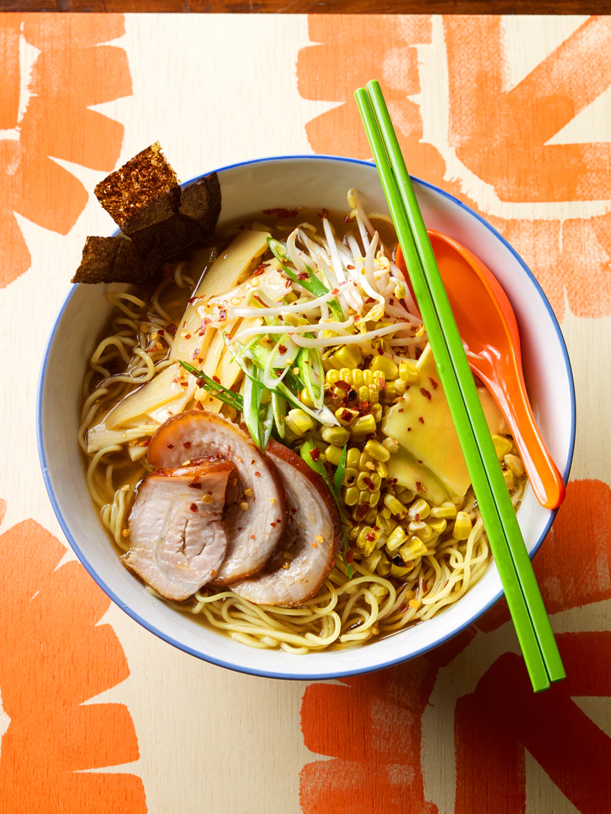
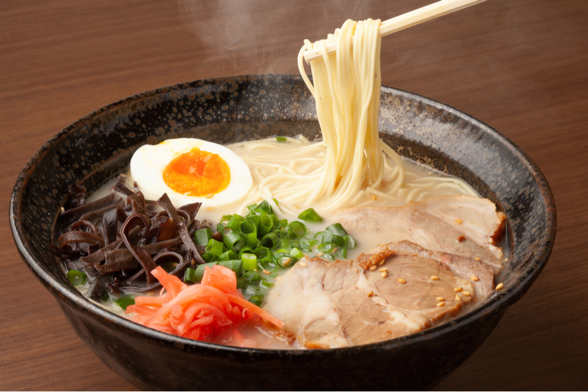
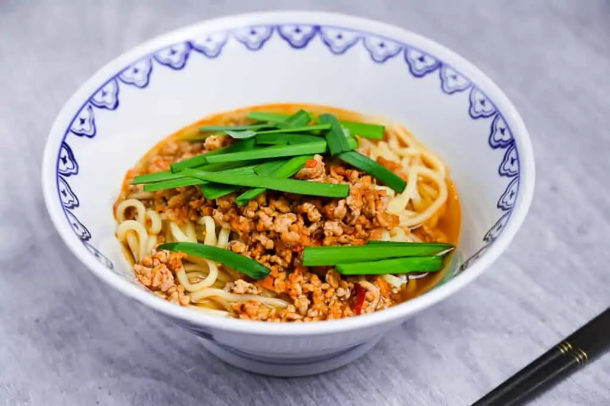

Especialidades de Ramen
Ramen Sapporo
La capital de la isla de Hokkaidō, en el norte de Japón es casi un peregrinaje obligado para los amantes del ramen. Es famoso por la variedad de miso -habitualmente akamiso, rojo-, que produce un caldo potente lleno de sabor y aromas. Los fideos acostumbran a ser algo gruesos y entre los toppings más típicos están los brotes de soja salteados, carne de cerdo asada o picada, maíz, bambú o mantequilla. La capital de la isla de Hokkaidō, en el norte de Japón es casi un peregrinaje obligado para los amantes del ramen. Es famoso por la variedad de miso -habitualmente akamiso, rojo-, que produce un caldo potente lleno de sabor y aromas. Los fideos acostumbran a ser algo gruesos y entre los toppings más típicos están los brotes de soja salteados, carne de cerdo asada o picada, maíz, bambú o mantequilla.
Ramen Hakata
De Fukuoka, prefectura de la isla Kyūshū donde abundan los platos de cerdo. Aquí es típico, obviamente, el Tonkotsu ramen, preparado con un caldo de huesos de cerdo que a veces se cuecen durante días para liberar toda la grasa y el colágeno. Los fideos son finos y el caldo se puede condimentar a veces con miso o salsa de soja. Sésamo, ajo, cerdo, jengibre, takana -hojas de mostaza encurtidas- o alga nori son ingredientes habituales.
Ramen Asahikawa

Es la segunda ciudad más importante de Hokkaidō y también tiene su ramen particular. Aquí destacan los caldos de base de soja, de pollo, cerdo o pescado, con fideos finos y curvos. Es típico encontrar una capa de grasa en la supeficie, que ayuda a conservar el calor en los meses más fríos. En los suburbios de la ciudad se encuentra la Asahikawa Ramen Village, con ocho locales de los restaurantes de ramen más famosos de la ciudad.
Ramen Yokohama Ie-kei

En Yokohama los fideos del ramen son muy gruesos y el caldo se prepara con cerdo y salsa de soja, siendo especialmente salado y graso. Normalmente se puede pedir el nivel de sal y grasa al gusto, incluso el punto de cocción de los fideos. El alga nori no suele faltar a la hora de servirlo, y también son típicas las espinacas. EN Yokohama está además el museo del ramen.
Ramen Nagoya Taiwan
En Nagoya este plato se conoce más como Taiwan ramen, ya que se diferencia de la gran especialidad local, la sopa kishimen. Este ramen se quedó con el nombre de un cocinero taiwanés que empezó a servir una versión de la sopa china de su tierra a los japoneses. El caldo lleva una base de soja y normalmente se añade carne picada de cerdo y abundante ajo.